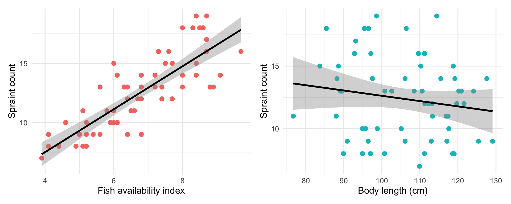
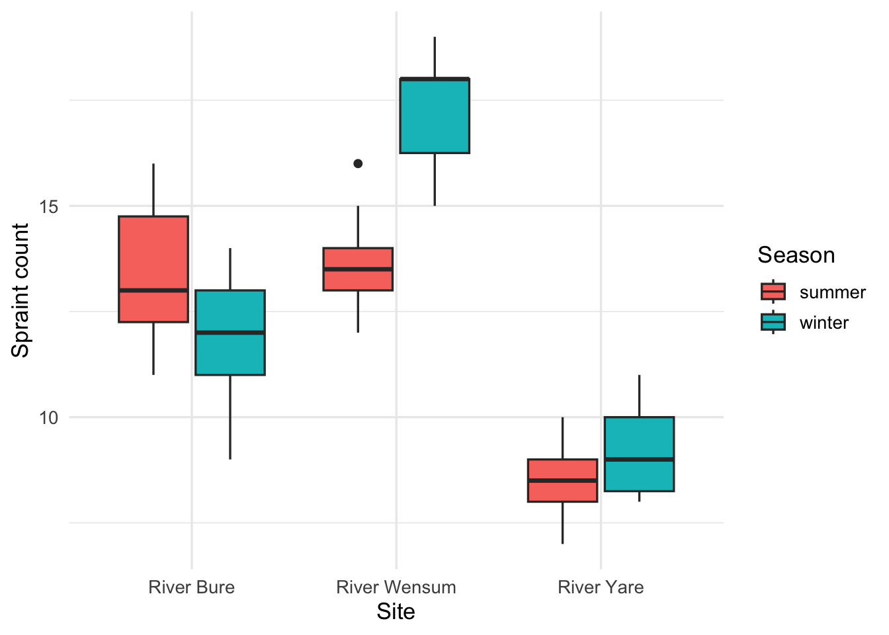
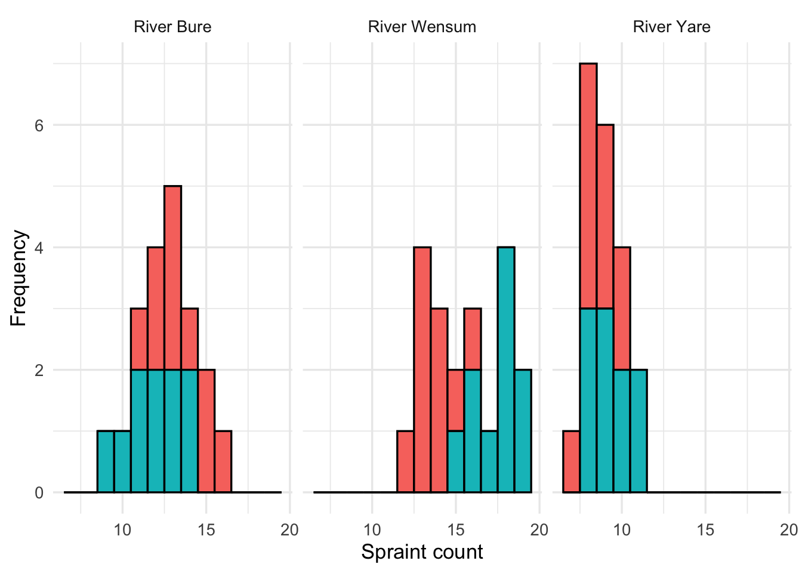
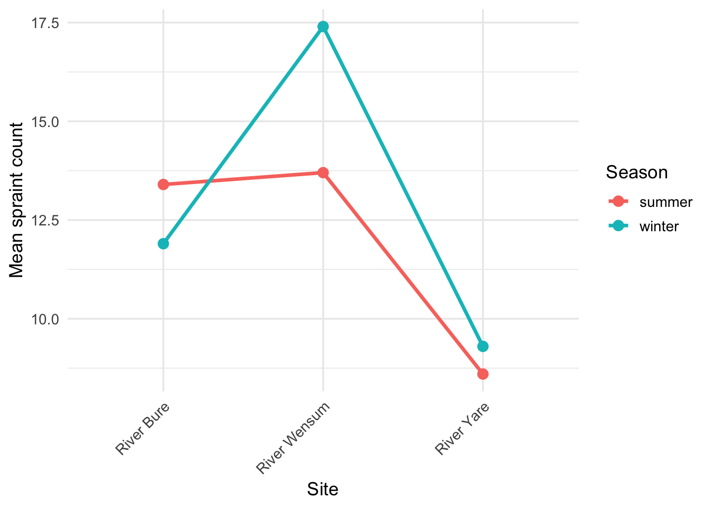

Workshop 5 - Testing and Measuring Relationships Extension
1 The Route to Today’s Workshop
2 Understanding Our Terms and Definitions
Correlation Analysis
A statistical method used to measure the strength and direction of a relationship between two or more variables.
Regression Analysis
A statistical method used to estimate the relationship between a dependent outcome variable and one or more independent predictor variables.
Positive Association
As one variable increases, the other variable also increases.
Negative Association
As one variable increases, the other variable decreases.
3 Regression Analysis
The most common type of regression analysis is linear regression, which assumes a linear relationship between an independent variable and a dependent variable, and fits a straight line to the data.
In our grassland experiment, we might ask: “Is there a relationship between soil moisture and species richness?” Linear regression would allow us to:
4 Linear Regression
4.1 What is Linear Regression?
So far we have compared means between groups using t-tests and ANOVA. But what if we want to understand the relationship between two continuous variables?
A continuous variable is a variable that can take any value within a range, it is measured rather than counted. Examples from our otter dataset include:
- Body length (e.g. 115.3 cm)
- Body mass (e.g. 9.52 kg)
- Fish availability index (e.g. 6.7)
- Spraint count (e.g. 12)
This is different from a categorical variable (such as site or sex), which takes a fixed number of distinct values. In linear regression, the dependent variable (y) must be continuous. The independent variable (x) is typically continuous too, though categorical variables can also be used in more advanced models.
In our otter survey, we might ask:
“Does fish availability predict how many spraints an otter leaves?”
This is a question about a relationship between two variables, as fish availability increases, do spraints increase too? Linear regression allows us to answer this.
4.2 The Three Steps of Linear Regression
Step 1: Test whether a relationship exists
We plot the data and fit a straight line, then test whether the slope is significantly different from zero.
If fish availability has no effect on spraints, the line would be completely flat (slope = 0), as fish availability increases, spraints do not change.
If fish availability does affect spraints, the line would slope upwards (positive relationship) or downwards (negative relationship).
The two plots below illustrate this using our otter data:
Fish availability (left): the line slopes clearly upward, suggesting that as fish availability increases, spraint count increases too. The points follow the line closely, suggesting a strong positive relationship.
Body length (right): the line is almost completely flat, and the points are scattered widely with no clear pattern. This suggests no meaningful relationship between body length and spraint count.
Looking at the fish availability plot, what does the slope of the line suggest?
Looking at the body length plot, what does the slope of the line suggest?
Comparing the two plots, which variable appears to be a better predictor of spraint count?
If the slope of the fish availability line was negative instead of positive, what would this mean biologically?
We test the slope formally using a t-test, which produces a p-value:
- If p < 0.05: the slope is significantly different from zero; we have evidence of a relationship
- If p > 0.05: we do not have enough evidence to conclude a relationship exists
In R, we fit the linear model using lm() and then use summary() to view the results:
# Fit linear models for both variables
lm_fish <- lm(spraints ~ fish_index, data = otter_data)
lm_length <- lm(spraints ~ length_cm, data = otter_data)summary(lm_fish)
Call:
lm(formula = spraints ~ fish_index, data = otter_data)
Residuals:
Min 1Q Median 3Q Max
-3.5767 -1.2375 -0.2637 1.3212 3.8737
Coefficients:
Estimate Std. Error t value Pr(>|t|)
(Intercept) 0.2483 1.0938 0.227 0.821
fish_index 1.8130 0.1596 11.358 2.25e-16 ***
---
Signif. codes: 0 '***' 0.001 '**' 0.01 '*' 0.05 '.' 0.1 ' ' 1
Residual standard error: 1.815 on 58 degrees of freedom
Multiple R-squared: 0.6898, Adjusted R-squared: 0.6845
F-statistic: 129 on 1 and 58 DF, p-value: 2.249e-16summary(lm_length)
Call:
lm(formula = spraints ~ length_cm, data = otter_data)
Residuals:
Min 1Q Median 3Q Max
-5.2072 -2.7089 0.0695 2.0684 6.9829
Coefficients:
Estimate Std. Error t value Pr(>|t|)
(Intercept) 16.85006 3.53021 4.773 1.27e-05 ***
length_cm -0.04225 0.03316 -1.274 0.208
---
Signif. codes: 0 '***' 0.001 '**' 0.01 '*' 0.05 '.' 0.1 ' ' 1
Residual standard error: 3.215 on 58 degrees of freedom
Multiple R-squared: 0.02723, Adjusted R-squared: 0.01046
F-statistic: 1.623 on 1 and 58 DF, p-value: 0.2077The Coefficients table in the output shows:
| Column | What it means |
|---|---|
Estimate |
The value of the slope or intercept |
Std. Error |
The uncertainty around that estimate |
t value |
How many standard errors the slope is from zero |
Pr(>|t|) |
The p-value: is the slope significantly different from zero? |
For fish index, the slope is significantly different from zero (p < 0.001), confirming a positive relationship with spraint count. For body length, the slope is not significantly different from zero (p = 0.207), confirming no meaningful relationship.
Where would you find the p-value for the slope in the summary() output?
If the t value for the slope is 8.45, what does this suggest?
Step 2: Assess the strength of the relationship
Even if a relationship exists, it might be weak, the data points might be scattered widely around the line. We measure how well the line fits the data using R²(R-squared:
R² is the proportion of variation in spraints that is explained by fish availability, or length.
- R² = 1: the line fits the data perfectly; fish availability or length explains all variation in spraints
- R² = 0.6: fish availability or length explains 60% of the variation in spraints; other factors explain the remaining 40%
- R² = 0: the line explains nothing; fish availability or length has no predictive power
R² can be found in the summary() output under Multiple R-squared:
# Extract R-squared values
summary(lm_fish)$r.squared[1] 0.6898364summary(lm_length)$r.squared[1] 0.02722733If R² = 0.69 for the relationship between fish index and spraints, and R² = 0.027 for the relationship between body length and spraints, what does this mean?
Step 3: Describe the relationship
Finally, we describe the relationship using the regression equation:
y = a + bx
For our otter data:
\text{spraints} = a + b \times \text{fish index}
Where:
- y = spraints: the dependent variable (what we are trying to predict)
- x = fish index: the independent variable (what we think drives spraints)
- a = the intercept: the predicted number of spraints when fish index = 0
- b = the slope: how much spraints change for each one-unit increase in fish index
We can extract the slope and intercept directly from the model:
# Extract slope and intercept
coef(lm_fish)(Intercept) fish_index
0.2482678 1.8130078 What does a slope of zero mean in a linear regression?
What does the intercept tell us in our otter regression?
In our otter model above, what is the dependent variable?
Note
Important assumptions of linear regression:
- The relationship between the two variables is linear: a straight line is a reasonable description of the data
- The residuals (differences between observed and predicted values) are normally distributed
- The variance of the residuals is constant across all values of x: this is called homoscedasticity
We will check these assumptions in the next section.
5 Case Study: Otter -
We should have already read in our data. We can start by checking out the variable types in our data
Can you remember how to check the data type of each variable in R?
str() shows the structure of the dataset — including the data type of each variable. For example:
str(otter_data)spc_tbl_ [60 × 9] (S3: spec_tbl_df/tbl_df/tbl/data.frame)
$ otter_id : chr [1:60] "OT001" "OT002" "OT003" "OT004" ...
$ site : chr [1:60] "River Bure" "River Bure" "River Bure" "River Bure" ...
$ season : chr [1:60] "summer" "summer" "summer" "summer" ...
$ sex : chr [1:60] "male" "male" "male" "female" ...
$ age_class : chr [1:60] "sub_adult" "sub_adult" "juvenile" "juvenile" ...
$ length_cm : num [1:60] 120.2 127.6 116.9 88.6 110.6 ...
$ mass_kg : num [1:60] 11.33 10.42 7.2 5.23 9.63 ...
$ spraints : num [1:60] 13 14 11 15 13 15 12 13 12 16 ...
$ fish_index: num [1:60] 6.3 6.1 5.1 7.7 5.6 6 6.7 6.4 6.8 7.3 ...
- attr(*, "spec")=
.. cols(
.. otter_id = col_character(),
.. site = col_character(),
.. season = col_character(),
.. sex = col_character(),
.. age_class = col_character(),
.. length_cm = col_double(),
.. mass_kg = col_double(),
.. spraints = col_double(),
.. fish_index = col_double()
.. )
- attr(*, "problems")=<pointer: 0xadf0dc2d0> This shows:
| Data type shown | What it means | Variable type |
|---|---|---|
chr |
Character:text values | Nominal categorical |
Factor |
Factor: categorical with levels | Nominal or ordinal categorical |
int |
Integer: whole numbers | Discrete quantitative |
num |
Numeric: decimal numbers | Continuous quantitative |
So for our otter dataset:
siteandsexshow aschr— nominal categoricalspraintsshows asint— discrete quantitative (you cannot have half a spraint)fish_index,length_cm,mass_kgshow asnum— continuous quantitative
5.1 What should we do analysis on?
In our otter dataset, if you ran the code above you should see that we have many variables: site, season, sex, age_class length_cm, mass_kg, spraints and fish_index. We cannot and should not analyse all possible combinations. Instead, we start with a clear research question.
Here are some examples using our otter data:
| Research question | Dependent variable (y) | Independent variable (x) | Analysis |
|---|---|---|---|
| Do male otters have longer body length than females? | length_cm |
sex |
t-test |
| Does spraint count differ between sites? | spraints |
site |
One-way ANOVA |
| Does spraint count differ between sites and seasons? | spraints |
site + season |
Two-way ANOVA |
| Does fish availability predict spraint count? | spraints |
fish_index |
Linear regression |
Note
A good research question has three things:
- A clearly defined dependent variable: what you are measuring as an outcome
- A clearly defined independent variable: what you think drives that outcome
- A biological justification: why would you expect these two variables to be related?
Before you visualise or analyse anything, you should be able to complete this sentence:
“I want to know whether x affects x, because … .”
For example:
“I want to know whether site and season affects spraints, because otters may ….”
Once you have your research question, you only need to visualise the variables involved, not the entire dataset.
You want to know whether site and season affects sprain count. Which variables do you need to visualise?
Which of the following is a well-formed research question?
A well-formed research question should:
- Name a specific dependent variable (spraint count)
- Name specific independent variables (site and season)
- Include a biological justification — why might these variables be related?
- Be testable — it leads directly to a specific statistical analysis (in this case, a two-way ANOVA)
The other options are poorly formed because they are too vague, do not name specific variables, and do not have a clear biological motivation. Fishing for significant results across all variables — sometimes called p-hacking — is considered poor scientific practice.
Now that we have decided on what we are doing, let’s get analysing…
5.2 The Analysis
5.2.1 Step 1. Visualise!
Let’s first visualise our data to get a good idea of what’s going on.
## Use: sprain, site and season to visualise the data.
ggplot(otter_data, aes(x = site, y = spraints, fill = season)) +
geom_boxplot() +
labs(x = "Site", y = "Spraint count", fill = "Season") +
theme_minimal(base_size = 13)
What is this initial visualisation telling us about the data?
Looking at the boxplot:
- River Wensum shows notably higher spraint counts in winter compared to summer — this is a potential interaction effect
- River Bure appears higher in summer than winter
- River Yare shows little difference between seasons
This pattern — where the effect of season depends on which site you are looking at — is the visual signature of an interaction. This is exactly what a two-way ANOVA will allow us to test formally.
Note
Remember — this is just a visual impression. We need to check our assumptions and run the formal test before drawing any conclusions.
In Chapter 3, we first learnt about the Shapiro-Wilk test for checking whether the data within each group are approximately normally distributed, and Levene’s test for checking whether the variances across groups are approximately equal. Let’s apply these to our otter data before running the two-way ANOVA.
Complete the code below to run the Shapiro-Wilk test, followed by Levene’s test, grouped by site and season. Replace each ___ with the correct answer:
The function to test normality is:
The function to test for equality of variances is:
Tip
Hints:
- R is case sensitive —
leveneTestis not the same aslevenetestorLeveneTest - For the grouping variables, think about what we want to check normality within — we want to check each combination of site and season separately
otter_data %>%
group_by(site, season) %>%
summarise(
shapiro_w = ___(spraints)$statistic,
shapiro_p = ___(spraints)$$p.value
)
___(spraints ~ site * season,, data = otter_data)# Shapiro-Wilk test for normality within each site x season combination
otter_data %>%
group_by(site, season) %>%
summarise(
shapiro_w = shapiro.test(spraints)$statistic,
shapiro_p = shapiro.test(spraints)$p.value,
.groups = "drop"
)# A tibble: 6 × 4
site season shapiro_w shapiro_p
<chr> <chr> <dbl> <dbl>
1 River Bure summer 0.953 0.709
2 River Bure winter 0.948 0.646
3 River Wensum summer 0.916 0.328
4 River Wensum winter 0.896 0.198
5 River Yare summer 0.904 0.245
6 River Yare winter 0.878 0.124# Levene's test for equal variances across site x season combinations
leveneTest(spraints ~ site * season, data = otter_data)Levene's Test for Homogeneity of Variance (center = median)
Df F value Pr(>F)
group 5 0.5202 0.7599
54 What does a p-value > 0.05 in the Shapiro-Wilk test suggest?
What does a p-value > 0.05 in the Levene’s test suggest?
We have confirmed that the assumptions of normality and equal variances are met, let’s use a histogram to just have a quick visual check of the data distribution.
ggplot(otter_data, aes(x = spraints, fill = season)) +
geom_histogram(binwidth = 1, colour = "black") +
facet_wrap(~ site) +
labs(x = "Spraint count", y = "Frequency") +
theme_minimal(base_size = 13) +
theme(legend.position = "none")
There’s a lot going on but we can see that the data are approximately normally distributed within each site and season combination, with no obvious outliers, more importantly, we know from the Shapiro-Wilk test that the data are not significantly different from a normal distribution.
So, let’s run our test to see if there is a significant effect of site, season and the interaction between the two on spraint count.
What test should we use to test whether site and season affect spraint count?
Two-way ANOVA is the appropriate test when we have two independent variables (site and season) and want to examine their effect on a continuous dependent variable (spraint count).
spraint_aov <- aov(spraints ~ site * season, data = otter_data)
summary(spraint_aov) Df Sum Sq Mean Sq F value Pr(>F)
site 2 437.7 218.87 122.73 < 2e-16 ***
season 1 14.0 14.02 7.86 0.00701 **
site:season 2 68.1 34.07 19.10 5.32e-07 ***
Residuals 54 96.3 1.78
---
Signif. codes: 0 '***' 0.001 '**' 0.01 '*' 0.05 '.' 0.1 ' ' 15.2.2 Understanding and Writing Up Interactions
Before we interpret our ANOVA output, it is important to understand what an interaction actually means, and how to write one up correctly.
5.2.3 What is an Interaction?
An interaction occurs when the effect of one variable depends on the level of another variable. In our otter example:
“Does the effect of season on spraint count depend on which river we are looking at?”
If yes — there is an interaction. If no — there is no interaction and the effect of season is the same across all three rivers.
Note
A simple way to spot an interaction:
- No interaction — the difference between summer and winter spraints is roughly the same at all three sites
- Interaction present — the difference between summer and winter spraints is bigger at some sites than others, or even reverses direction
5.2.4 Visualising the Interaction
An interaction plot is the clearest way to see whether an interaction exists:
otter_data %>%
group_by(site, season) %>%
summarise(mean_spraints = mean(spraints), .groups = "drop") %>%
ggplot(aes(x = site, y = mean_spraints,
colour = season, group = season)) +
geom_line(linewidth = 1.2) +
geom_point(size = 3) +
labs(x = "Site",
y = "Mean spraint count",
colour = "Season") +
theme_minimal(base_size = 13) +
theme(axis.text.x = element_text(angle = 45, hjust = 1))
- If the lines are parallel — the effect of season is the same at all sites, suggesting no interaction
- If the lines are non-parallel or crossing — the effect of season differs between sites, suggesting an interaction is present
In our otter data, the lines cross between sites — River Wensum shows much higher spraints in winter, while River Bure shows higher spraints in summer. This crossing pattern is the visual signature of an interaction.
What would parallel lines in an interaction plot tell us?
If the lines cross in an interaction plot, what does this suggest?
5.2.5 How to Write Up an Interaction
When writing up a significant interaction, you need to:
- State the statistical result — F value, degrees of freedom, p-value
- Describe the direction — which combination was highest/lowest
- Interpret the biology — what does this mean in the real world
Here is an example write-up template:
Tip
Write-up template:
“There was a significant interaction between [factor 1] and [factor 2] on [dependent variable] (F(df1, df2) = X.XX, p = X.XXX). [Factor 1] had a [stronger/weaker/opposite] effect on [dependent variable] in [level of factor 2] compared to [other level of factor 2]. Specifically, [describe the pattern — which combination was highest, which was lowest, where did the effect reverse].”
For example, using our otter data:
Note
Example write-up:
“There was a significant interaction between site and season on spraint count (F(2, 54) = XX.XX, p < 0.001). Spraint counts were highest at River Wensum in winter, while River Bure showed higher counts in summer. This suggests that the seasonal pattern of territory marking behaviour differs between rivers, possibly reflecting differences in seasonal fish availability across sites.”
Now try writing your own — fill in the blanks:
There was a interaction between and on spraint count. The effect of season on spraint count between sites, with River showing the highest counts in .
“There was a significant interaction between site and season on spraint count. Spraint counts were highest at River Wensum in winter and at River Bure in summer, suggesting that the seasonal pattern of territory marking differs between rivers. This may reflect differences in the seasonal availability of fish prey across the three sites.”
Which of the following is the best write-up of a significant interaction?
A student writes: ‘There was a significant main effect of season, so otters always mark their territory more in winter.’ What is wrong with this statement?
What does the p-value for the interaction term tell us?